VELA
Restaurant Interior
The Vela Restaurant and Bar space emerges from the interplay between stars, constellations, and sky and boat-making techniques of the past. The ceiling form emanates a sky-like veil, altering its lighting and appearance based on the time of day. The motion of 'carving' and 'shaping' guides the grounded elements such as the bars, inspired by the ships and voyageurs. Such a space curves around its inhabitants and envelops the visitors in a warm and cave-like interior.
CONTEXT
Internship at PARTISANS
LOCATION
King Street East,
Unit 6, Toronto
SOFTWARE + TOOLS
Rhinoceros3D, Grasshopper, Python, Revit, Illustrator, Photoshop, Enscape
COLLABORATORS
Ivan Vasliyv, Jonathan Friedman
ROLES
Design iterations, construction documentation (IFC, Revisions, Patio approvals), fabrication rationalization
Read about it on Architectural Record and on Designlines .
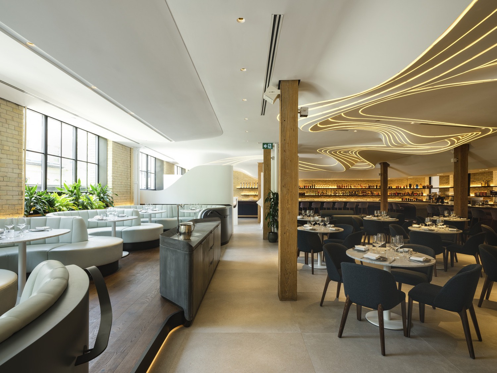


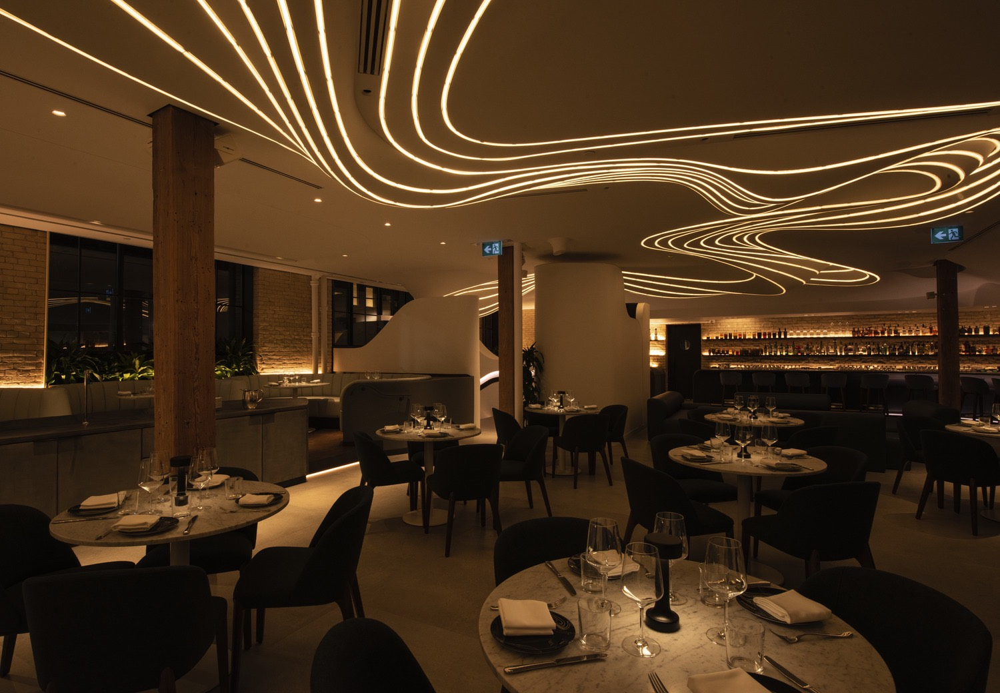
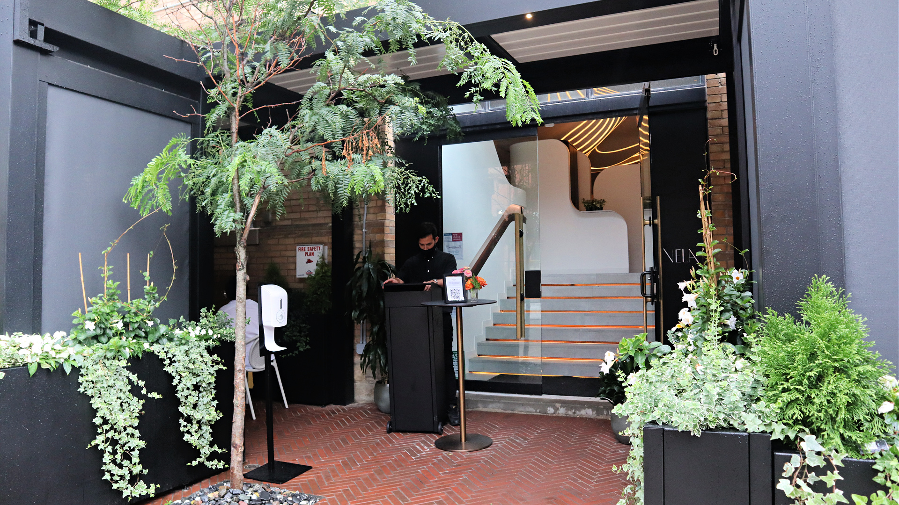
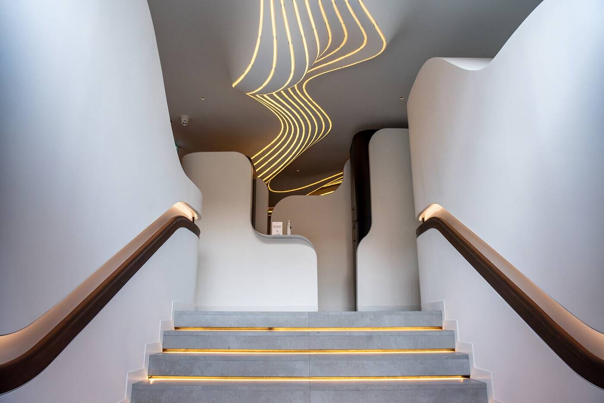

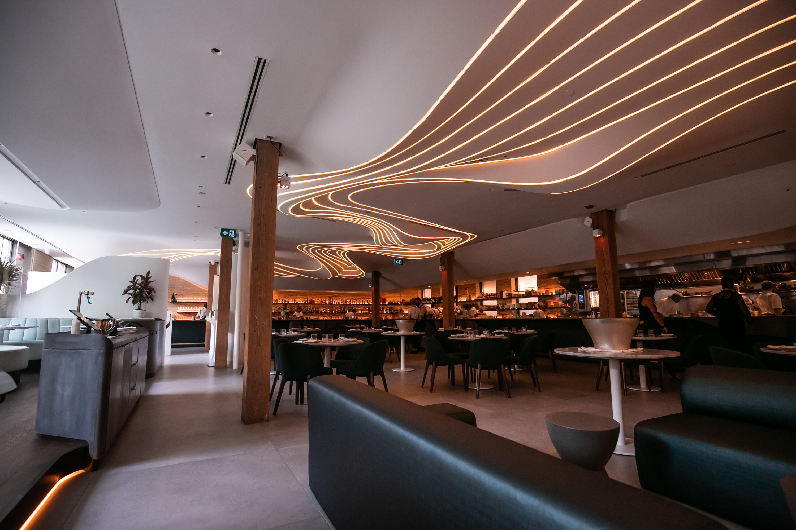
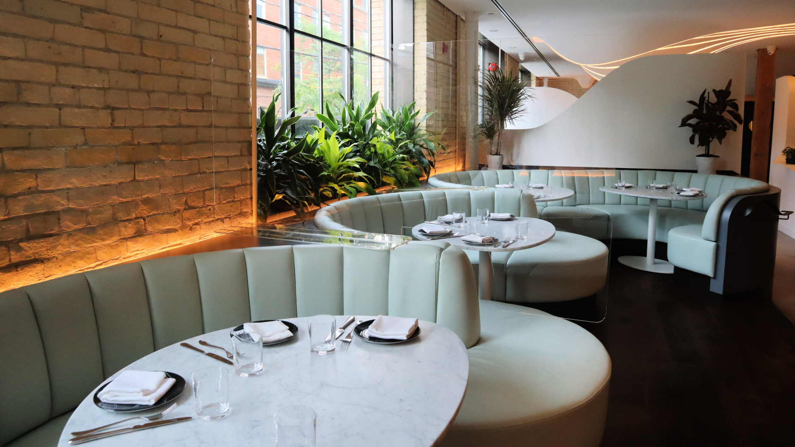
A RESTAURANT WHERE THE STARS MEET THE SEA
The design for vela starting from the concept of a sea voyage, where the organic forms of shipbuilding would meet the lightness of the sky. Thus, the project consisted of two visual portions - what is above and what is below. Petruding from the earth are heavy, solid build-in elements like the bar and the seating booths, all of which made from pre-cast concrete, along with the solid entry walls. These contrast with the airy fluid ceiling with its organic waves and lighting structure.
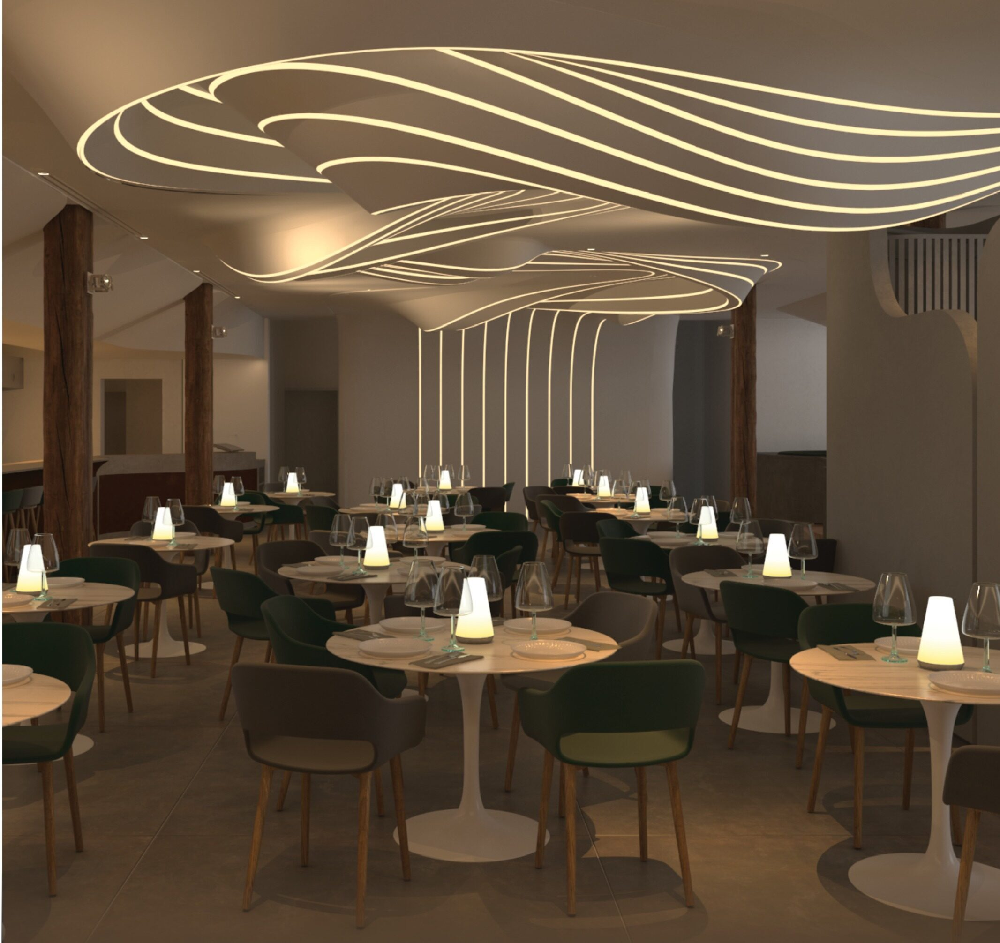
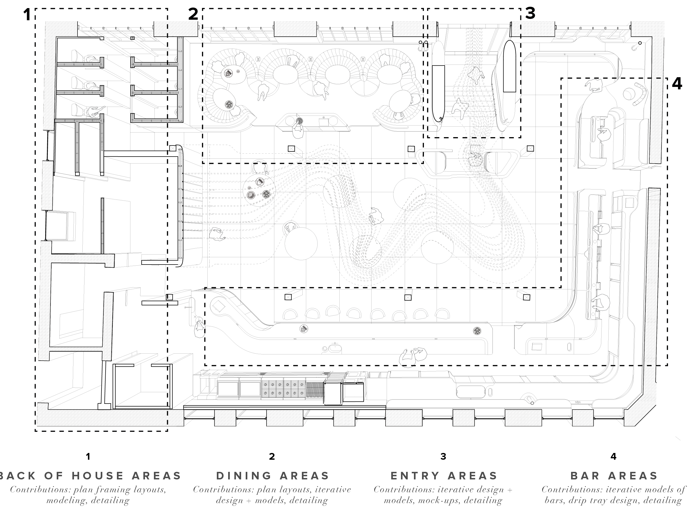

THE DESIGN OF THE CEILING
A large part of my contribution on the project was in the ceiling design. One challange here was designing the systems integration in order to ensure the systems all functioned properly (such as sprinklers).
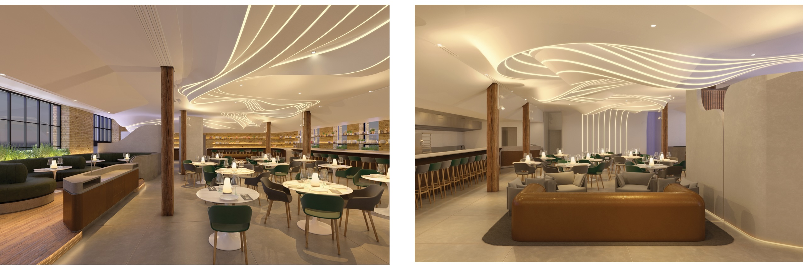
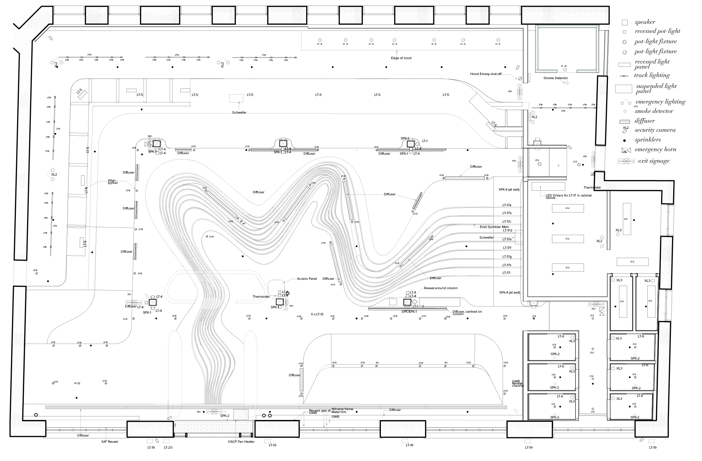

The second issue was the fiber-reinforced gypsum ceiling and it's fabrication. In order to fabricate the ceiling, molds were made to make individual panels in Mexico which were then assembled together on site. However, as there were undercuts in the lighting strips it was impossible just CNC all of the molds, so I was tasked with coding a subdividuon script which reduced the price of fabrication by 200,000$

THE DESIGN OF THE ENTRY
Another portion of the project that I had a significant hand in was the entryway staircase and walls. The goal was to have forms that complimented the ceiling buldge in that area in order to create a interplay of forms, with the entryway walls being the grounding feature that bridges the ground plane on the exterior with the interior. One sugnificant challange was the handrail detailing as I designed the profile to be ADa approved while being inset into the wall and also following the plan of the wall and morphing into a trim on the end, which made it a very complex geometry.
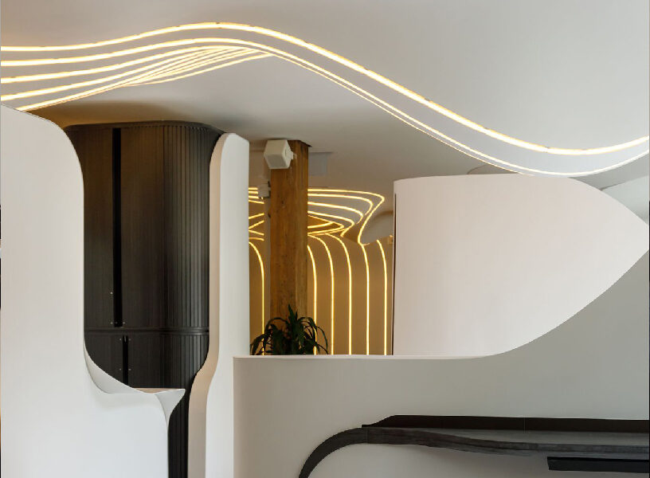
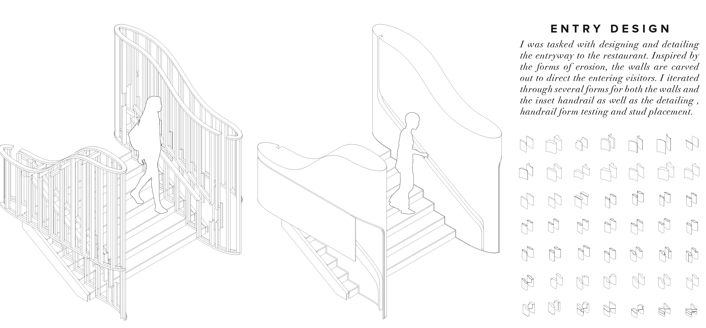
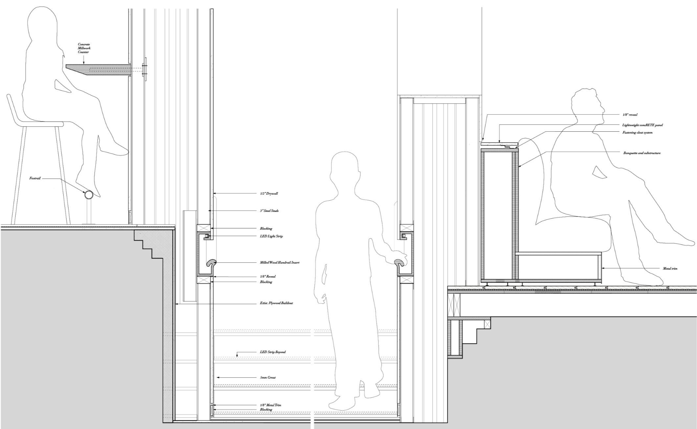

THE DESIGN OF THE BAR
The bar was a challange due to the programatic requirements for the kitchen side and the desire to have a thin concrete countertop with a leather underside on the guest side. This was accomplished after many iterations and discussions with many different contractors. The drip trays on the bar were a task I had the most fun with, as I created scripts inspired by constallations and hid various easter eggs (like the death star or the libra constallation) among the laser cut designs.


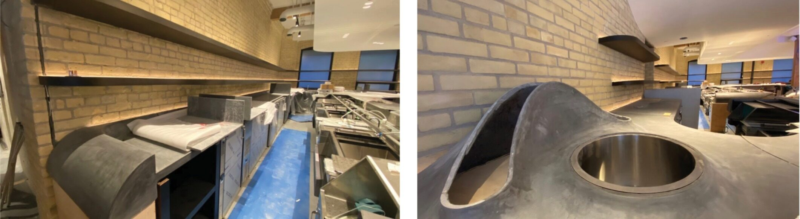